Gallery
写真家との共作として、撮影年とともに記録しています。
Photographs with atelier α3 — 2024
写真: atelier α3

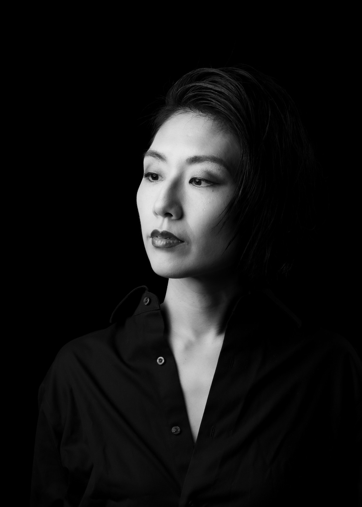
Photographs with OKEYA INC. — 2014
写真: OKEYA INC.（studio okeya・桶屋智秋）／duo kicco（高橋由有子との共演）
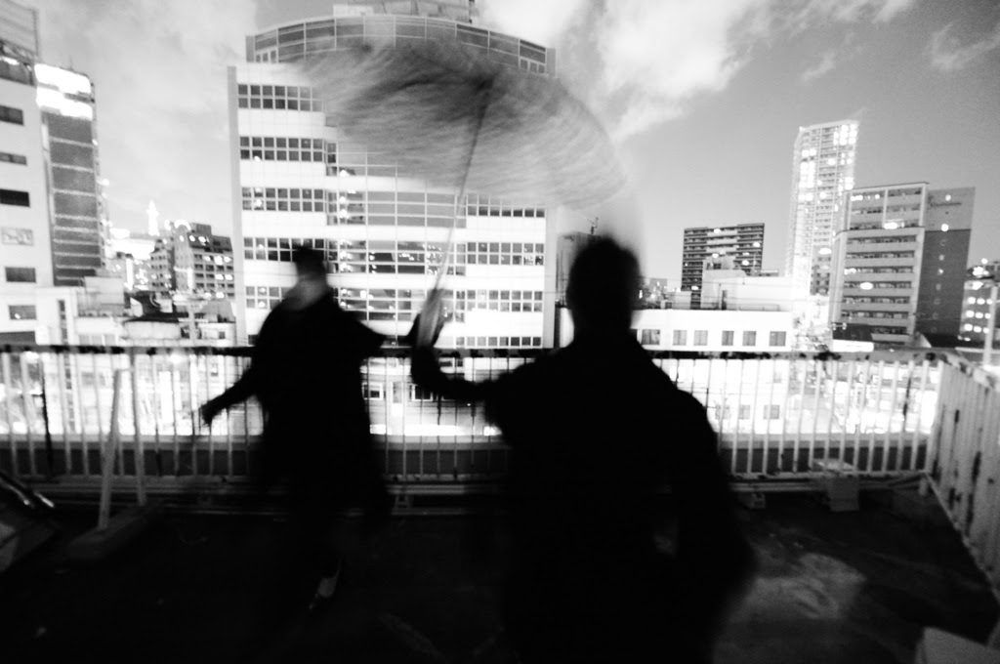
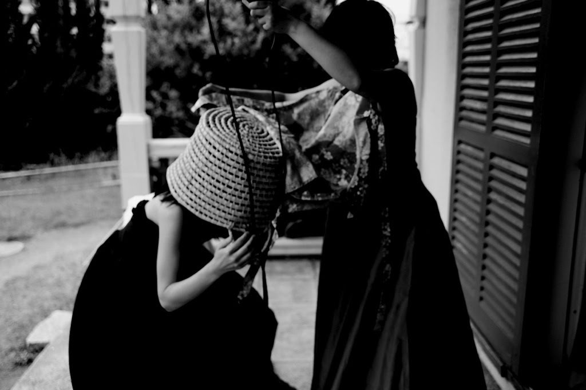
Photographs with OKEYA INC. — 2012
写真: OKEYA INC.（studio okeya・桶屋智秋）
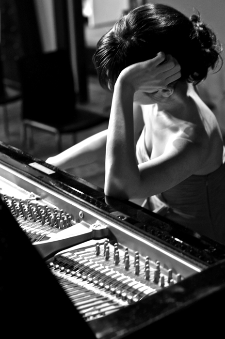
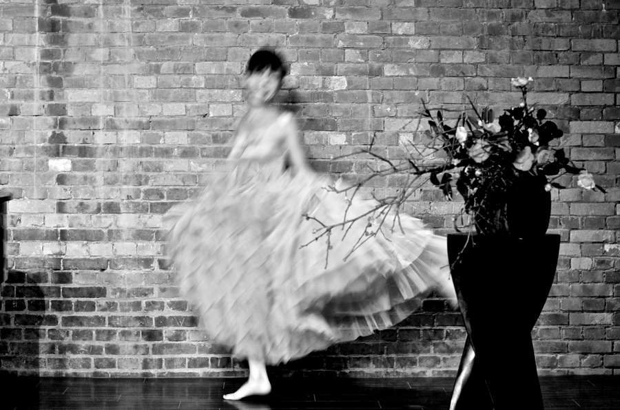
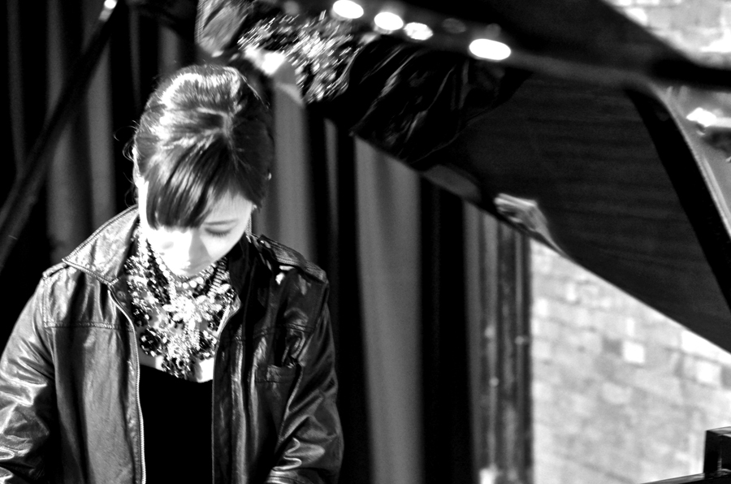
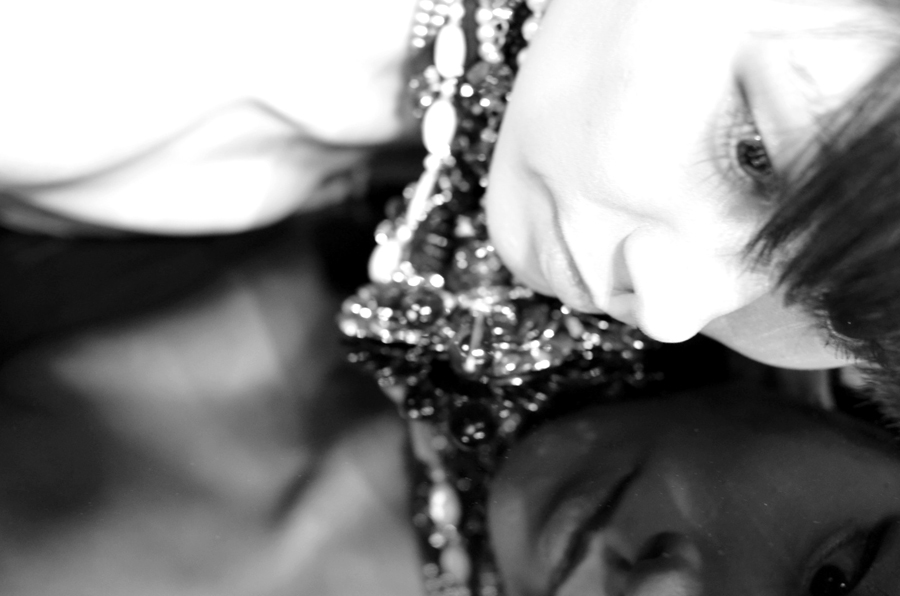
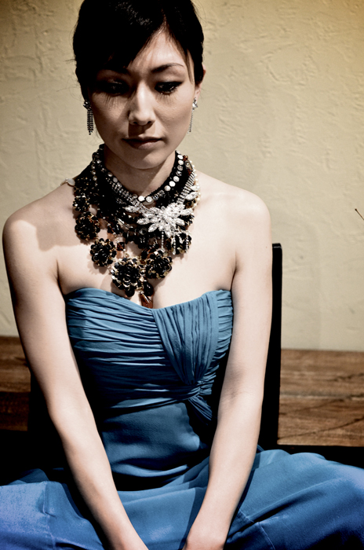
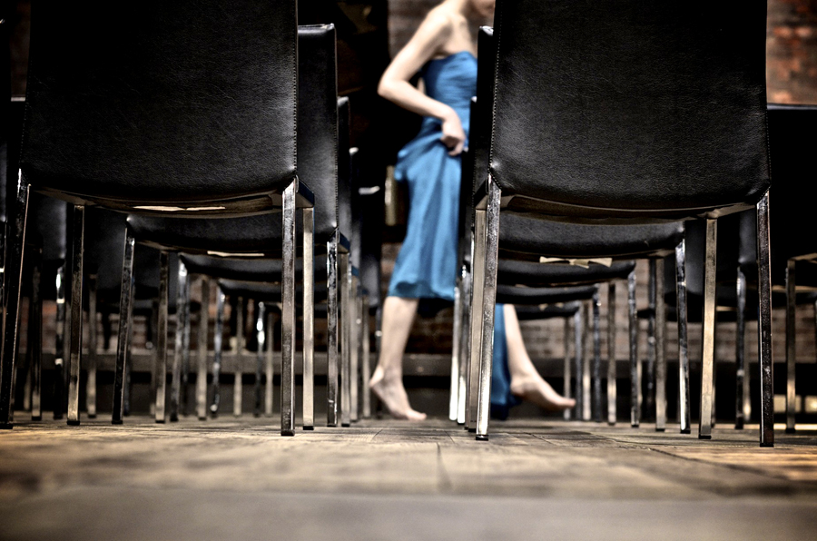
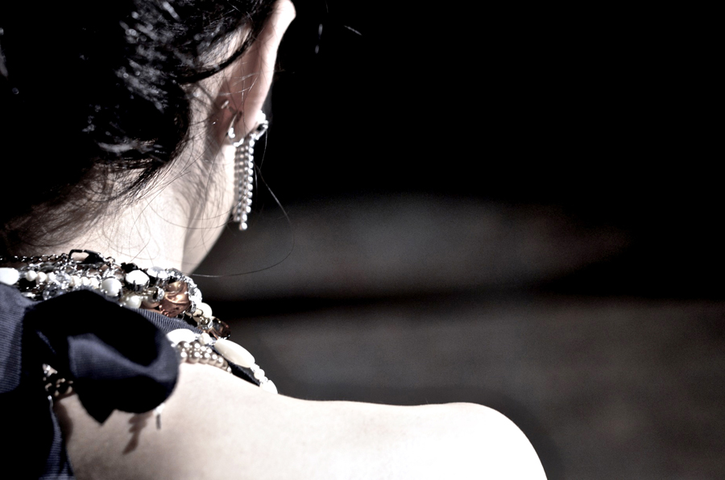
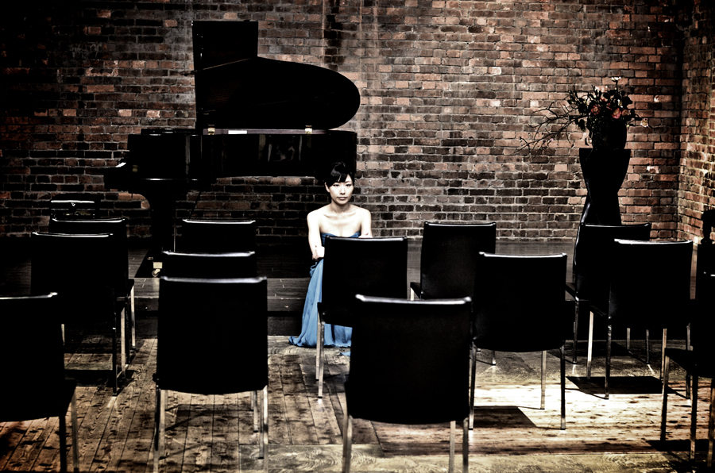
Photographs with OKEYA INC. — 2010
写真: OKEYA INC.（studio okeya・桶屋智秋）
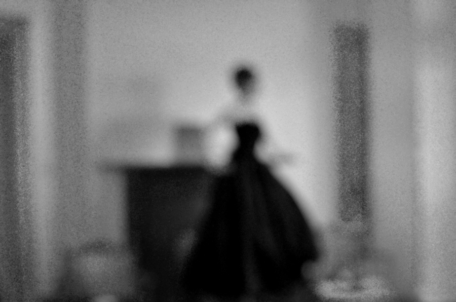
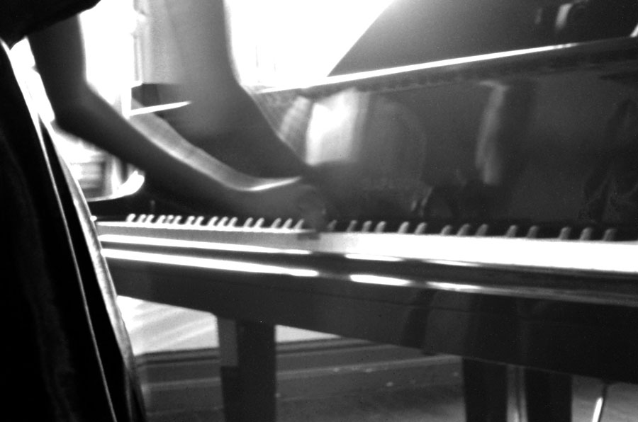
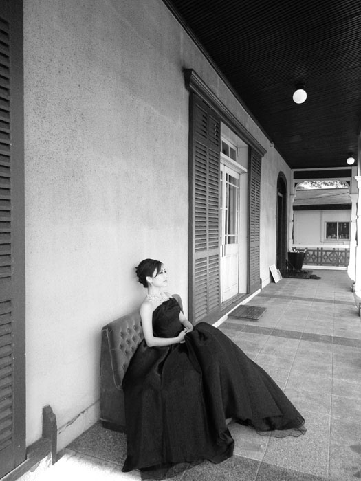
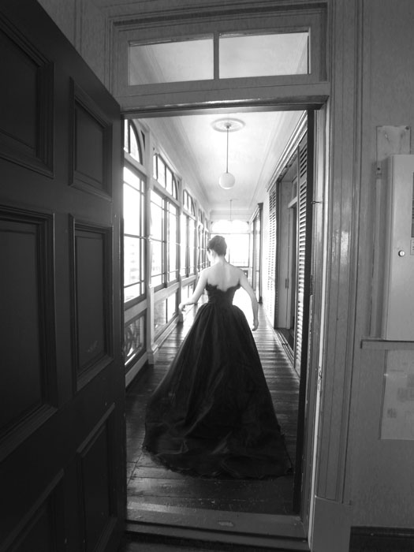
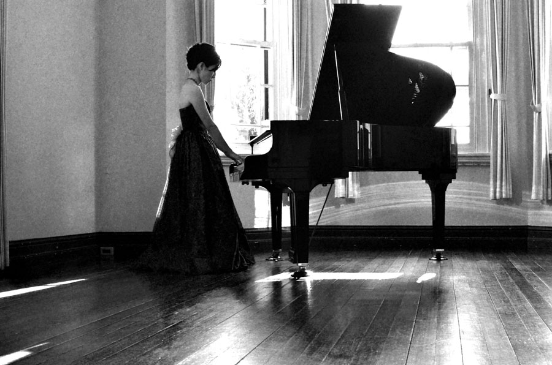
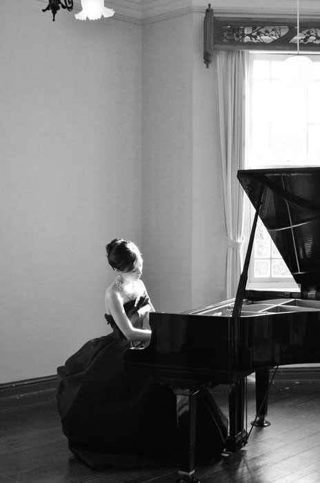